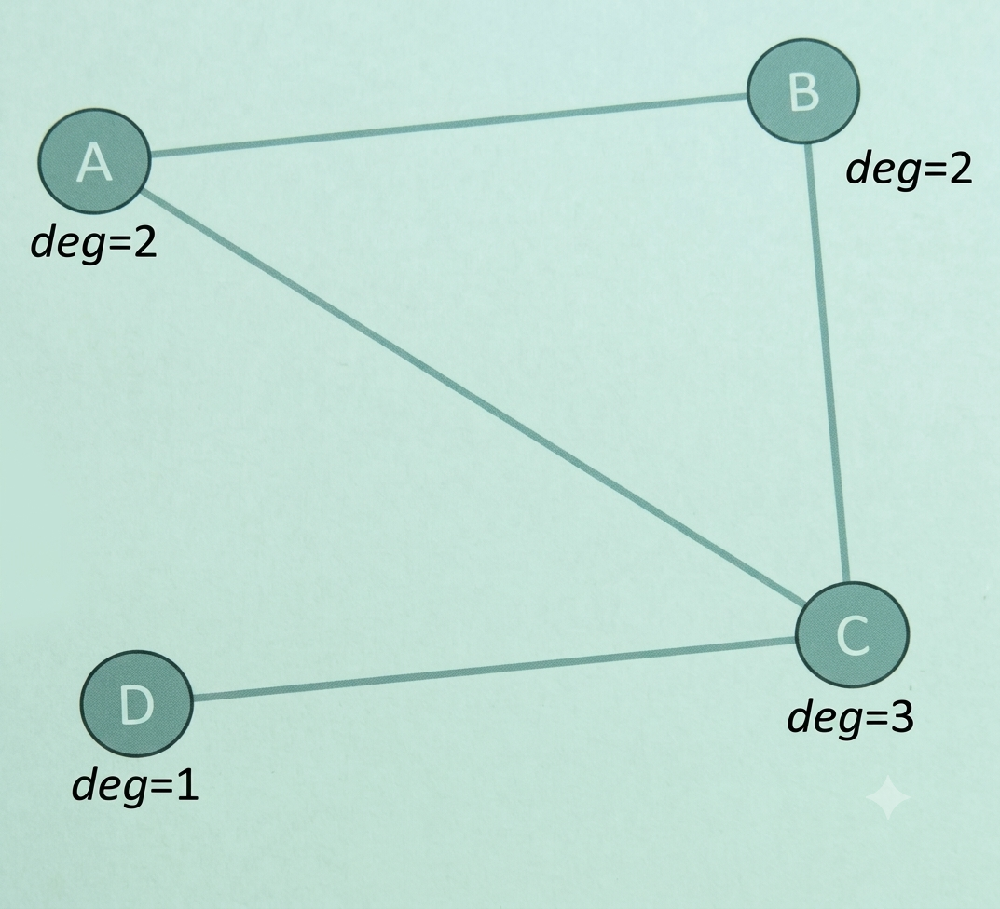
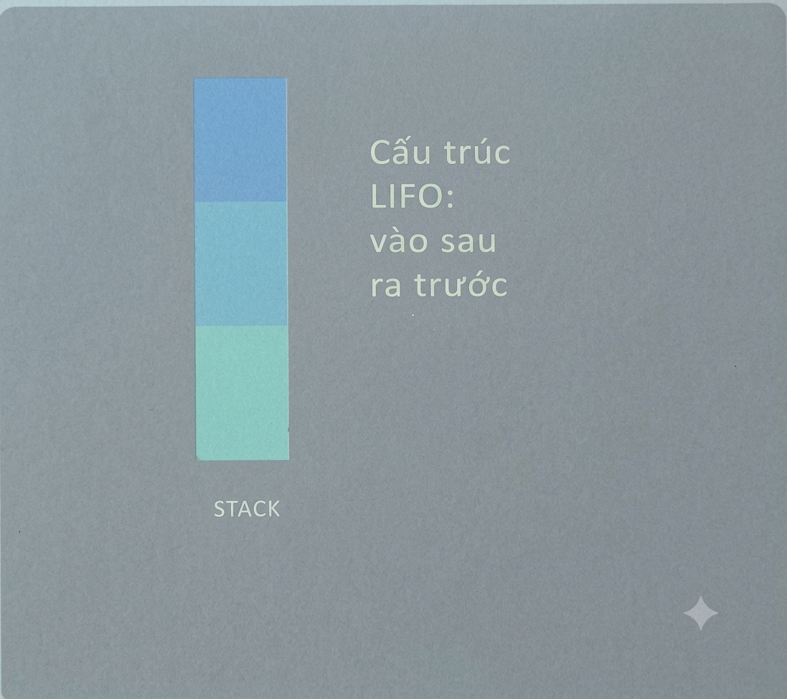

Mệnh đề tương đương &
luật tương đương
Công cụ biến đổi biểu thức logic
Tương đương logic là gì?
p ≡ q ⇔ p ↔ q là một hằng đúng
Cách 1: lập bảng chân trị, so sánh cột kết quả
Cách 2: biến đổi bằng luật tương đương — hiệu quả hơn khi nhiều biến (n biến cần 2n dòng bảng chân trị)
Hai mệnh đề tương đương có cùng giá trị chân lý trong MỌI trường hợp gán biến.
Bảng luật tương đương cơ bản
| Tên luật | Công thức |
|---|---|
| Đồng nhất | p ∧ T ≡ p ; p ∨ F ≡ p |
| Nuốt | p ∨ T ≡ T ; p ∧ F ≡ F |
| Lũy đẳng | p ∨ p ≡ p ; p ∧ p ≡ p |
| Phủ định kép | ¬(¬p) ≡ p |
| Giao hoán | p ∨ q ≡ q ∨ p ; p ∧ q ≡ q ∧ p |
| Kết hợp | (p ∨ q) ∨ r ≡ p ∨ (q ∨ r) |
| Phân phối | p ∨ (q ∧ r) ≡ (p ∨ q) ∧ (p ∨ r) |
| Hấp thụ | p ∨ (p ∧ q) ≡ p |
| Phép Kéo theo | p → q ≡ ¬p ∨ q |
Luật De Morgan
¬(p ∧ q) ≡ ¬p ∨ ¬q
¬(p ∨ q) ≡ ¬p ∧ ¬q
if (!(A && B)) tương đương với if (!A || !B)
if (!(0 < a && a < 5)) tương đương với
if (!(0 < a) || !(a < 5)) tương đương với
if (a <= 0 || 5 <= a)
Ví dụ: chứng minh ¬(p → q) ≡ p ∧ ¬q
¬(p → q) ≡ ¬(¬p ∨ q)
≡ ¬(¬p) ∧ ¬q
≡ p ∧ ¬q
thay p → q ≡ ¬p ∨ q
luật De Morgan
luật phủ định kép
✔ Vậy ¬(p → q) và p ∧ ¬q tương đương logic.
Dạng chuẩn tắc của mệnh đề
CNF và DNF
CNF và DNF là gì?
DNF — Dạng chuẩn tắc tuyển
- Tuyển (∨) của các hội (∧) literal
- (l₁₁ ∧ l₁₂) ∨ (l₂₁ ∧ l₂₂) ∨ ...
CNF — Dạng chuẩn tắc hội
- Hội (∧) của các tuyển (∨) literal
- (l₁₁ ∨ l₁₂) ∧ (l₂₁ ∨ l₂₂) ∧ ...
Ví dụ: chuyển p → (q ∧ r) về CNF
p → (q ∧ r) ≡ ¬p ∨ (q ∧ r)
≡ (¬p ∨ q) ∧ (¬p ∨ r)
loại bỏ →
luật phân phối
✔ Kết quả là dạng CNF: mỗi ngoặc là 1 tuyển literal, nối nhau bằng hội.
Tối thiểu hóa mệnh đề
Khái niệm
Tối thiểu hóa mệnh đề là quá trình biến đổi một biểu thức mệnh đề về dạng tương đương logic nhưng có số biến/phép toán ít nhất có thể.
Input: Biểu thức mệnh đề đã ở dạng Chuẩn tắc tuyển hoàn toàn
Output: Dạng tối thiểu của Biểu thức mệnh đề đã cho
Thuật toán Quine_McCluskey
Tối thiểu hóa mệnh đề - Thuật toán Quine_McCluskey
B1: Biểu diễn các Hội sơ cấp thành các xâu bit tương ứng
x = 1; x̄ = 0
B2: Sắp xếp các xâu bit theo chiều tăng dần số các chữ số 1 và phân chia thành các lớp sao cho các xâu bit có cùng số chữ số 1 vào 1 lớp.
B3: Làm giảm độ dài các xâu bit đi 1 bit theo quy tắc:
Nếu một cặp xâu bit chỉ khác nhau ở đúng 1 vị trí bit thì chúng sẽ được ghép cặp với nhau để tạo ra 1 xâu bit mới bằng cách bỏ đi bit ở vị trí khác nhau đó.
B4: Đánh dấu các xâu bit đã tham gia vào B3
B5: Lặp đi lặp lại từ B2 -> B4 cho đến khi không làm giảm được độ dài xâu bit nữa
B6: Biểu diễn các xâu bit không bị đánh dấu thành Hội sơ cấp tương ứng
B7: Từ tập Hội sơ cấp thu được ở B6, tìm ra tập con nhỏ nhất phủ toàn bộ biểu thức mệnh đề cần tối thiểu
=> tuyển của các Hội sơ cấp tìm được ở B7 là biểu thức tối thiểu cần tìm
Hàm Logic (Boolean)
Ký hiệu tương đương:
w̄ ≡ ¬w
w̄ x̄ ȳ z̄ ≡ ¬w ∧ ¬x ∧ ¬y ∧ ¬z
w.x.y.z ≡ w ∧ x ∧ y ∧ z
w + y ≡ w ∨ y
Lưu ý phân biệt:
w̄ x̄ ȳ z̄ ≠ ̅w̅x̅y̅z̅
̅w̅x̅y̅z̅ ≡ ¬(w.x.y.z) ≡ ¬(w ∧ x ∧ y ∧ z)
Ví dụ: Cho hàm F(w, x, y, z) = w̄x̄ȳz̄ + w̄x̄ȳz + w̄x̄yz̄ + w x̄ȳz̄ + w̄x̄yz + w̄xȳz + w x̄yz̄ + w̄xyz + wxy z̄ + wxyz
Hãy tìm hàm F tối thiểu bằng phương pháp Quine-McCluskey.
| hội sơ cấp | xâu bit | số |
|---|---|---|
| w̄x̄ȳz̄ | 0000 | 0 |
| w̄x̄ȳz | 0001 | 1 |
| w̄x̄yz̄ | 0010 | 2 |
| w x̄ȳz̄ | 1000 | 8 |
| w̄x̄yz | 0011 | 3 |
| w̄xȳz | 0101 | 5 |
| w x̄yz̄ | 1010 | 10 |
| w̄xyz | 0111 | 7 |
| wxy z̄ | 1110 | 14 |
| wxyz | 1111 | 15 |
Step 1
1 0001 ✓
2 0010 ✓
8 1000 ✓
3 0011 ✓
5 0101 ✓
10 1010 ✓
7 0111 ✓
14 1110 ✓
15 1111 ✓
Step 2
(0,2) 00-0 ✓
(0,8) -000 ✓
(1,3) 00-1 ✓
(1,5) 0-01 ✓
(2,3) 001- ✓
(2,10) -010 ✓
(8,10) 10-0 ✓
(3,7) 0-11 ✓
(5,7) 01-1 ✓
(10,14) 1-10 *
(7,15) -111 *
(14,15) 111- *
Step 3
(0,2,1,3) 00--
(0,2,8,10) -0-0 *
(0,8,2,10) -0-0
(1,3,5,7) 0--1 *
(1,5,3,7) 0--1
-111 -0-0
111- 0--1
Tìm biểu thức tối thiểu
| các xâu bit không đánh dấu | Hội sơ cấp rút gọn | Hội sơ cấp | |||||||||
|---|---|---|---|---|---|---|---|---|---|---|---|
| w̄x̄ȳz̄ | w̄x̄ȳz | w̄x̄yz̄ | wx̄ȳz̄ | w̄x̄yz | w̄xȳz | wx̄yz̄ | w̄xyz | wxyz̄ | wxyz | ||
| 1-10 | wyz̄ | + | + | ||||||||
| -111 | xyz | + | + | ||||||||
| * 111- | wxy |
+
+
|
|||||||||
| 00-- | w̄x̄ | + | + | + | + | ||||||
| ✓ -0-0 | x̄z̄ | + | + | + | + | ||||||
| ✓ 0--1 | w̄z | + | + | + | + | ||||||
| ✓ | ✓ | ✓ | ✓ | ✓ | ✓ | ✓ | ✓ | ||||
2.6. Vị từ và các lượng tử
Mở rộng logic mệnh đề sang câu có biến
Vị từ, ∀ và ∃
Vị từ (predicate) là một câu chứa biến, giá trị chân lý phụ thuộc vào giá trị gán cho biến đó. Ký hiệu P(x) giá trị chân lý của P tại x.
Lượng từ (quantifier) biến một vị từ thành một mệnh đề bằng cách chỉ rõ nó đúng với mọi phần tử hay tồn tại phần tử của một miền xác định (domain).
| Ký hiệu | Tên gọi | Ý nghĩa |
|---|---|---|
| ∀x P(x) | Lượng từ phổ dụng | P(x) đúng với Mọi x trong miền xác định |
| ∃x P(x) | Lượng từ tồn tại | TỒN TẠI ít nhất một x làm P(x) đúng |
Dịch ngôn ngữ tự nhiên ⇔ vị từ
| Câu tự nhiên | Ký hiệu vị từ |
|---|---|
| "Mọi số nguyên bình phương đều không âm" | ∀x ∈ ℤ, x² ≥ 0 |
| "Tồn tại số nguyên có bình phương bằng 4" | ∃x ∈ ℤ, x² = 4 |
Biến tự do & biến ràng buộc
Điều kiện để một biểu thức là mệnh đề
Phân biệt biến tự do / ràng buộc
- Cả x và y đều bị RÀNG BUỘC
- → Toàn bộ biểu thức là một MỆNH ĐỀ hoàn chỉnh
- y bị ràng buộc, nhưng x TỰ DO
- → Đây vẫn là một VỊ TỪ theo biến x
Luật tương đương trong logic vị tử
Phủ định lượng tử lồng nhau
De Morgan cho lượng từ
| Phủ định | Tương đương với |
|---|---|
| ¬∀x P(x) | ∃x ¬P(x) |
| ¬∃x P(x) | ∀x ¬P(x) |
Ví dụ: phủ định lượng từ lồng nhau
Luật suy diễn (Rules of Inference)
Suy luận hợp lệ (valid) khi: nếu tất cả tiền đề đúng thì kết luận chắc chắn đúng.
| Luật | Dạng | Ý nghĩa |
|---|---|---|
| Modus ponens | p; p→q ∴ q | Từ p và p→q suy ra q |
| Modus tollens | ¬q; p→q ∴ ¬p | Từ ¬q và p→q suy ra ¬p |
| Tam đoạn luận giả định | p→q; q→r ∴ p→r | Bắc cầu qua 2 phép kéo theo |
| Tam đoạn luận tuyển | p∨q; ¬p ∴ q | Loại trừ 1 khả năng |
| Luật cộng | p ∴ p∨q | Mở rộng bằng tuyển |
| Luật rút gọn | p∧q ∴ p | Trích 1 thành phần từ hội |
Ví dụ: chứng minh từng bước
Từ các tiên đề:
"Trời không nắng chiều nay và trời lạnh hơn hôm qua",
"Chúng ta sẽ đi bơi chỉ khi trời nắng",
"Nếu không đi bơi thì sẽ đi chèo thuyền",
"Nếu đi chèo thuyền thì sẽ về nhà trước khi mặt trời lặn".
Hãy chứng minh kết luận "Sẽ về nhà trước khi mặt trời lặn".
Lời giải
Đặt p: "trời nắng chiều nay",
q: "trời lạnh hơn hôm qua",
r: "đi bơi",
s: "đi chèo thuyền",
t: "về nhà trước khi mặt trời lặn".
Tiền đề:
Ví dụ: chứng minh từng bước
| Bước | Mệnh đề | Lý do |
|---|---|---|
| 1 | \(\neg p \land q\) | Tiền đề |
| 2 | \(\neg p\) | Rút gọn từ (1) |
| 3 | \(r \to p\) | Tiền đề |
| 4 | \(\neg r\) | Modus tollens từ (2),(3) |
| 5 | \(\neg r \to s\) | Tiền đề |
| 6 | \(s\) | Modus ponens từ (4),(5) |
| 7 | \(s \to t\) | Tiền đề |
| 8 | \(t \quad \checkmark \text{Kết luận}\) | Modus ponens từ (6),(7) |
Tiền đề:
Ngụy biện thường gặp
Khẳng định vế sau
- \(p \to q; \quad q \quad \therefore p\)
- KHÔNG HỢP LỆ — dễ nhầm với modus ponens
Phủ định vế trước
- \(p \to q; \quad \neg p \quad \therefore \neg q\)
- KHÔNG HỢP LỆ — dễ nhầm với modus tollens
CHƯƠNG 3
PHƯƠNG PHÁP ĐẾM
Mục tiêu bài học
Quy tắc nhân & quy tắc cộng
với MỖI cách của bước 1 thì bước 2 có \(n_2\) cách...
\(|A_1 \cup \dots \cup A_m| = |A_1| + \dots + |A_m|\)
Ví dụ minh họa
12 × 11
23 + 15 + 19
Nguyên lý bù trừ
Ví dụ minh họa
Nguyên lý Dirichlet
hàm f từ tập k+1 phần tử đến tập k phần tử KHÔNG THỂ là đơn ánh.
(G. Lejeune Dirichlet, thế kỷ 19)
Nguyên lý Dirichlet tổng quát
Thêm 1 vật nữa là bắt buộc có hộp đạt \(r\) vật.

Ví dụ minh họa
Hoán vị & chỉnh hợp
Tổ hợp
Ví dụ minh họa
Tổ hợp lặp
| KHÔNG lặp | CÓ lặp | |
|---|---|---|
| Có thứ tự (Chỉnh hợp) |
\(n! / (n-r)!\) | \(n^r\) |
| Không thứ tự (Tổ hợp) |
\(n! / [r!(n-r)!]\) | \(C(n+r-1, r)\) |
Ví dụ minh họa
"trả trước" 6 đơn vị, còn 5 đơn vị tự do \(\rightarrow\)
Hệ thức truy hồi — định nghĩa
Ví dụ thiết lập hệ thức truy hồi
Phương trình đặc trưng
Ví dụ giải từng bước

Câu tự luận TL5
Cho \(a_n = 4a_{n-1} - 4a_{n-2}\) với \(a_0=1, a_1=4\).
a) Lập phương trình đặc trưng, xác định loại nghiệm.
b) Giải hệ thức truy hồi để tìm công thức tường minh cho \(a_n\).
LÝ THUYẾT ĐỒ THỊ
— từ khái niệm đến 5 thuật toán kinh điển
§10.1–11.5
Đồ thị là gì?
có thứ tự
tự — đi từ u đến v
- Quan hệ ĐỐI XỨNG (VD: "là bạn của nhau") \(\rightarrow\) dùng đồ thị vô hướng
- Quan hệ KHÔNG đối xứng (VD: "theo dõi", "nợ tiền") \(\rightarrow\) dùng đồ thị có hướng
- Chọn sai loại đồ thị sẽ làm MẤT thông tin quan trọng về chiều quan hệ
Đồ thị trong thực tế CNTT
| Bài toán | Đỉnh | Cạnh | Loại |
|---|---|---|---|
| Mạng xã hội (Facebook) | Người dùng | Kết bạn | Vô hướng |
| Mạng xã hội (Twitter/X) | Người dùng | Theo dõi | Có hướng |
| Mạng máy tính | Máy chủ / router | Đường truyền | Vô hướng |
| Giao thông một chiều | Nút giao | Đoạn đường | Có hướng |
| Luồng dữ liệu chương trình | Hàm / khối lệnh | Lời gọi hàm | Có hướng |
Phân loại đồ thị
| Loại đồ thị | Khuyên? | Cạnh song song? | Có hướng? |
|---|---|---|---|
| Đơn đồ thị (simple graph) | Không | Không | Không |
| Đa đồ thị (multigraph) | Không | Có | Không |
| Giả đồ thị (pseudograph) | Có | Có | Không |
| Đồ thị có hướng | Có thể có | Không | Có |
| Đa đồ thị có hướng | Có thể có | Có | Có |
- Sơ đồ mạng LAN (đơn đồ thị): tối đa 1 đường kết nối trực tiếp giữa 2 máy
- Đường bay giữa 2 thành phố có nhiều hãng khai thác \(\rightarrow\) đa đồ thị (nhiều cạnh song song)
- Hàm gọi đệ quy chính nó \(\rightarrow\) cần khuyên (loop) \(\rightarrow\) giả đồ thị
Bậc đỉnh & Định lý bắt tay

Số đỉnh bậc lẻ: C(3), D(1) → 2 đỉnh (số chẵn)
Các đồ thị đặc biệt
\(m \times n\) cạnh
Ứng dụng đồ thị hai phía
Biểu diễn & duyệt đồ thị
Ma trận kề vs Danh sách kề
| Tiêu chí | Ma trận kề | Danh sách kề |
|---|---|---|
| Bộ nhớ |
\(O(n^2)\) tốn kém với đồ thị thưa |
\(O(n + m)\) — hiệu quả hơn |
| Kiểm tra 2 đỉnh kề nhau | \(O(1)\) | \(O(\deg(v))\) |
| Duyệt các đỉnh kề của \(v\) | \(O(n)\) | \(O(\deg(v))\) — nhanh hơn |
Ví dụ: xây dựng ma trận kề
| 1 | 2 | 3 | 4 | |
|---|---|---|---|---|
| 1 | 0 | 1 | 1 | 0 |
| 2 | 1 | 0 | 0 | 1 |
| 3 | 1 | 0 | 0 | 1 |
| 4 | 0 | 1 | 1 | 0 |
Thuật toán DFS (Depth-First Search)
- Cài đặt bằng đệ quy hoặc ngăn xếp (stack)
- Đi càng sâu càng tốt theo 1 nhánh, chỉ quay lui khi hết đỉnh kề chưa thăm
- Ứng dụng: web crawler, giải mê cung, kiểm tra chu trình

Đồ thị mẫu cho demo DFS / BFS
DFS — chạy từng bước
| Bước | Đỉnh xét | Stack | Thứ tự thăm |
|---|---|---|---|
| 1 | A | [A] | A |
| 2 | B (kề A) | [A,B] | A,B |
| 3 | D (kề B) | [A,B,D] | A,B,D |
| 4 | quay lui → E (kề B) | [A,B,E] | A,B,D,E |
| 5 | F (kề E) | [A,B,E,F] | A,B,D,E,F |
| 6 | C (kề F) | [A,B,E,F,C] | A,B,D,E,F,C |
BFS — chạy từng bước
| Bước | Xử lý | Queue sau xử lý |
|---|---|---|
| 1 | A | [B, C] |
| 2 | B | [C, D, E] |
| 3 | C | [D, E, F] |
| 4 | D | [E, F] |
| 5 | E | [F] |
| 6 | F | [] |
Liên thông & thành phần liên thông
- Thành phần liên thông: đồ thị con liên thông CỰC ĐẠI (không thể thêm gì mà vẫn liên thông)
- Đồ thị có hướng: liên thông MẠNH (đường đi 2 chiều giữa các cặp đỉnh) vs liên thông YẾU (bỏ chiều thì liên thông)
- Cách xác định: chạy DFS/BFS lặp lại — mỗi lần chạy từ 1 đỉnh chưa thăm tìm ra đúng 1 thành phần
Demo: tìm thành phần liên thông
| Thành phần | Tập đỉnh | Cách tìm |
|---|---|---|
| 1 | {1, 2, 3} | DFS từ đỉnh 1 |
| 2 | {4, 5} | DFS từ đỉnh 4 (chưa thăm) |
| 3 | {6} | Đỉnh cô lập tự thành 1 thành phần |